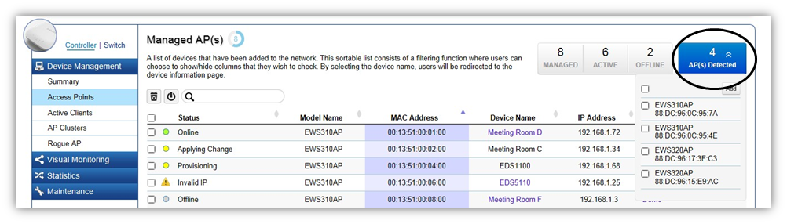
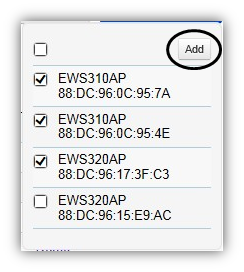
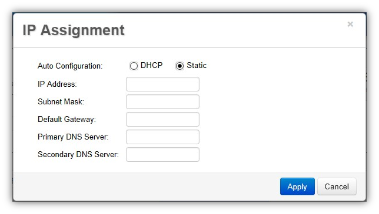
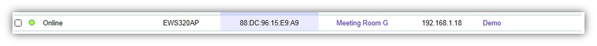

Managing EWS Access Points
1. Access Points in the network will be automatically discovered by the EWS and will be listed in the AP(s) Detected list in the Access Point menu.

2. Select the Access Point(s) you wish to manage and click Add.

3. You will be prompted to assign the IP Address under the IP Assignment screen.

DHCP |
You can choose to auto assign an IP Address if there is a DHCP server in the network. |
Static |
If you wish to manually assign the IP Address, choose “Static”. Enter the IP Address you wish to assign to the AP(s) (if more than one AP is added, you’ll be prompted to enter a range of IP Address) and fill in the subnet mask and default gateway. |
4. Click Apply and the Access Point(s) you’ve configured will be moved to the Managed list. Note that the status of the AP will change from Connecting to Provisioning to Online.
Once the status turns Online, your Access Point(s) have been successfully added to the Managed list.

Created with the Personal Edition of HelpNDoc: Free HTML Help documentation generator